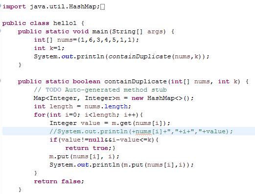
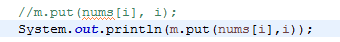
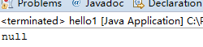
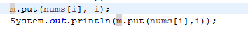
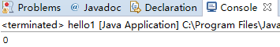
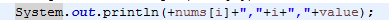
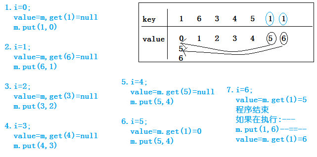
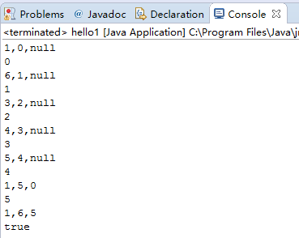

---内容开始---
没有比较完整的说明他们的用法，一般就只能看源函数，但是看起来比较的费劲。
那么究竟put函数和get函数的用法是如何的呢？
当然java中的Map集合是有Key和Value的。
使用的参数：该方法有两个参数。
返回值：当存在这个key的时候,会覆盖掉原来的value并返回oldvalue,也就是旧值。
对返回值的进一步解释：
举例子：
比如说这段代码---

因为对于hashMap对象m还没有存入数据，是一个空的；
所以调用key（nums[i]）找不到对应的value（i）。
---返回null


如果不注释m.put(nums[i],i)，意味着m里面先存了key（nums[i]）---value(i)。
对于例子key(nums[i])-value(i)，也就是【1---0】。
---返回value（0）


对于覆盖旧值：
现在把这行注释去掉

使用的参数：
返回值：指定键映射到的值，如果此映射不包含键的映射，则为NULL。
返回值进一步阐述：
整个程序步骤如下：

对应的输出：

通过以上的分析基本对于put函数和get函数有一定的了解，这对于进一步学习java有益。
欢迎大家一起探讨、学习！
---内容结束---